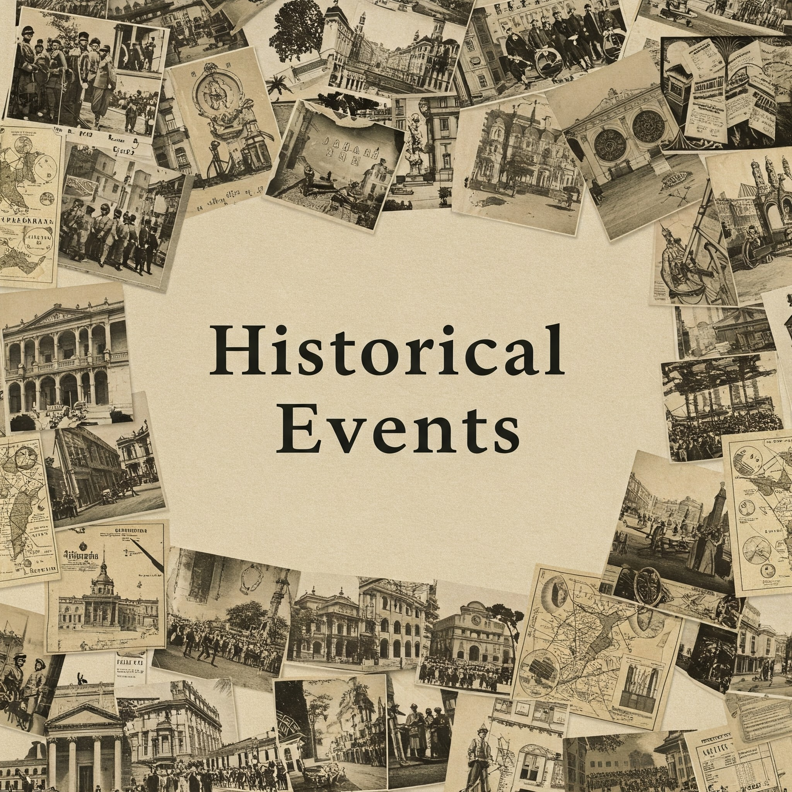

1st February: Significant Events in Indian History
●1884: Birth of Basanta Kumar Biswas. Revolutionary freedom fighter Basanta Kumar Biswas was born on 1st February 1884. He played a key role in the Indian independence movement and was involved in the Delhi-Lahore Conspiracy Case.
●1992: Economic Reforms Begin in India. On 1st February 1992, India took significant steps in its economic liberalization process, including the abolition of the Controller of Capital Issues (CCI), paving the way for market-driven reforms.
●2003: Space Shuttle Columbia Disaster. On 1st February 2003, the Space Shuttle Columbia disintegrated during re-entry, killing all seven astronauts on board, including Kalpana Chawla, the first Indian-origin woman in space.
●2017: Union Budget Presented on 1st February for the First Time. The Indian government presented the Union Budget on 1st February 2017, breaking the tradition of presenting it on the last working day of February. This change aimed to ensure timely implementation of policies.
2nd February: Significant Events in Indian History
●1814: Establishment of the Calcutta Museum. On 2nd February 1814, the Calcutta Museum (now Kolkata Museum) was established, which is an important center for Indian history and culture.
●1889: Birth of Rajkumari Amrit Kaur. Rajkumari Amrit Kaur, an influential Indian politician and activist, was born on 2nd February 1889. She was India's first Health Minister.
●1915: Birth of Khushwant Singh. Renowned Indian writer, lawyer, diplomat, and journalist Khushwant Singh was born on 2nd February 1915. He wrote many famous books like "Train to Pakistan".
●1952: India's First Test Cricket Victory. On 2nd February 1952, India won its first Test cricket match in Madras (now Chennai).
●1953: Establishment of the All India Khadi and Village Industries Board. On 2nd February 1953, the All India Khadi and Village Industries Board was established to promote rural development.
●1960: Death of Acharya Chatursen Shastri. Acharya Chatursen Shastri, a great Hindi novelist, passed away on 2nd February 1960.
●1970: Birth of Anurag Basu. Indian film director Anurag Basu was born on 2nd February 1970. He directed famous films like "Barfi!" and "Ludo".
●1989: Birth of Apoorva Muralinath. Basketball player Apoorva Muralinath was born on 2nd February 1989.
●1990: Birth of Subhash Singh. Indian footballer Subhash Singh was born on 2nd February 1990.
●2006: Notification of the Mahatma Gandhi NREGA Act. The Mahatma Gandhi NREGA Act, aimed at enhancing rural employment opportunities, was notified on 2nd February 2006.
3rd February: Significant Events in World History
●1451: Sultan Mehmed II, also known as Mehmed the Conqueror, inherited the throne of the Ottoman Empire.
●1488: Bartolomeu Dias and his crew became the first Europeans to land on South African soil at Mossel Bay.
●1509: The Battle of Diu took place, where the Portuguese navy defeated a joint fleet of the Ottoman Empire, the Republic of Venice, and others, establishing Portuguese trading control in the Indian Ocean.
●1861: Thomas Clemson took office as the first U.S. Superintendent of Agriculture.
●1870: Iowa ratified the 15th Amendment to the United States Constitution, allowing suffrage for all races and colors.
●1925: India's first electric train service commenced.
●1966: The Soviet spacecraft Luna 9 achieved the first soft landing on the Moon.
●1931: The Hawke's Bay earthquake, New Zealand's worst natural disaster, killed 256 people and injured thousands.
4th February: Significant Events in Indian History
●1628: Shah Jahan was crowned the Mughal Emperor in Agra, marking the golden age of Mughal architecture, including the construction of the Taj Mahal.
●1881: The first issue of 'Kesari', a Marathi daily newspaper, was published under the editorship of Lokmanya Tilak, becoming a powerful voice for India’s freedom struggle.
●1922: Pandit Bhimsen Joshi, the legendary Hindustani classical vocalist and Bharat Ratna awardee, was born in Gadag, Karnataka. The Chauri Chaura incident occurred in Uttar Pradesh during the Non-Cooperation Movement, leading to Gandhi’s decision to withdraw the movement.
●1938: Birju Maharaj, India’s Kathak maestro and a Padma Vibhushan recipient, was born in Lucknow, revolutionizing Kathak dance globally.
●1948: The Rashtriya Swayamsevak Sangh (RSS) was banned, and the Reserve Bank of India (RBI) was nationalized post-independence.
●1959: India’s Rourkela Steel Plant (Odisha) was inaugurated by President Dr. Rajendra Prasad, marking a milestone in India’s industrialization, built with German collaboration.
●1973: India’s largest merchant vessel, 'Jawaharlal Nehru' (88,000 DWT super tanker), commenced operations, boosting maritime trade.
●1974: Satyendra Nath Bose, the physicist renowned for the Bose-Einstein condensate theory, passed away in Kolkata, laying the foundation for quantum mechanics.
●1990: Ernakulam (Kerala) became India’s first fully literate district, achieving a 100% literacy rate.
●2001: India granted refugee status to the 17th Karmapa Lama, Ugyen Trinley Dorje, after he fled Tibet.
●2014: Satya Nadella, an Indian-American executive, was appointed CEO of Microsoft, becoming a global icon in tech leadership.
January 5: Significant Events in Indian History
●1592: Birth of Shah Jahan, the Mughal Emperor known for commissioning the Taj Mahal.
●1880: Birth of Barindra Kumar Ghosh, an Indian revolutionary and journalist.
●1934: Birth of Murli Manohar Joshi, an influential Indian politician.
●1941: Birth of Mansoor Ali Khan Pataudi, former captain of the Indian cricket team.
●1955: Birth of Mamata Banerjee, the Chief Minister of West Bengal and leader of the All India Trinamool Congress.
●1973: Birth of Uday Chopra, Bollywood actor, producer, and screenwriter.
●1976: Birth of Ganja Karuppu, Tamil cinema actor known for his comic roles.
●1992: Birth of Kshetrimayum Malamengamba Meetei, Indian professional football player.
●1994: Birth of Anjum Moudgil, Indian sport shooter who has gained international acclaim.
●2009: Death of Sudhir Ranjan Majumdar, former Chief Minister of Tripura.
●2014: Launch of GSAT-14 communication satellite, marking the first successful flight of an Indian cryogenic engine.
6th February: Significant Events in Indian History
●1915: Kavi Pradeep, the legendary Hindi poet and lyricist, was born. He is best known for his patriotic song "Ae Mere Watan Ke Logon," which became an anthem during the 1962 India-China War.
●1931: Pt. Motilal Nehru, a prominent freedom fighter, lawyer, and father of India’s first Prime Minister, Jawaharlal Nehru, passed away. He was a key figure in the Indian independence movement and co-founded the Swaraj Party.
●1959: Anna Chandy became the first woman judge to be appointed to the Kerala High Court, marking a significant milestone for women in the Indian judiciary.
●1983: S. Sreesanth, the Indian cricketer known for his right-arm fast-medium bowling, was born. He played a crucial role in India’s 2007 T20 World Cup and 2011 ODI World Cup victories.
●2002: India shot down a Pakistani spy plane that had entered Indian airspace, showcasing the country’s defense capabilities.
●2009: India provided financial assistance of ₹9.45 crore for the construction of three large dams along its border with Nepal, strengthening bilateral ties.
7th February: Significant Events in Indian History
● National Black HIV/AIDS Awareness Day: This day promotes HIV prevention, testing, and treatment in Black communities.

●1898: Birth of Ramabai Bhimrao Ambedkar. The first wife of Dr. B. R. Ambedkar was born on this day in 1898.
●1902: Birth of Devaneya Pavanar. A Tamil writer and scholar, author of over 35 books, was born in 1902.
●1993: Birth of Srikanth Kidambi. The world's top men's singles badminton player was born in 1993.
●1942: Death of Sachindra Nath Sanyal. An Indian revolutionary and co-founder of the Hindustan Republican Association died in 1942.
●1965: Death of Balwant Bhatt. A celebrated Indian musician passed away in 1965.
●2007: Death of Narayan Sanyal. A Bengali writer known for his modern literature died in 2007.
8th February: Significant Events in Indian History
●1862: Establishment of India's first comprehensive railway workshop in Jamalpur.
●1936: Jawaharlal Nehru became the leader of the Indian National Congress.

●1986: Introduction of prepaid taxi services at Delhi Airport.
9th February: Significant Events in Indian History
●1806: Telanga Kharia, a tribal freedom fighter, was born. He was an important leader who fought against British rule.
●1913: Mehar Lal Soni Zia Fatehabadi, an Urdu ghazal and nazm writer, was born. His poems beautifully describe emotions like love, pain, and hope.
●1922: Captain Chittarath Poovakkatt Krishnan Nair, the founder of The Leela Group, was born. He started a new era of luxury hotels in India.
●1968: Rahul Roy, an Indian actor and producer, was born. He has acted in several hit films.
●2000: Shobhana Samarth, a Marathi actress and producer, passed away. She acted in many Marathi and Hindi films.
10th February: Significant Events in Indian History
●1691: Job Charnock established the first English factory in Calcutta. This is seen as the beginning of the British East India Company's influence in India.
●1856: Maharaja Gangadhar Rao, the husband of Rani Lakshmibai, passed away. This event led her to become the queen of Jhansi and play a crucial role in the 1857 Indian Rebellion.
●1921: Mahatma Gandhi inaugurated the Kashi Vidyapeeth. This was a significant step in the movement for national education.
●1949: The University of Pune was established. It is one of the leading universities in India.
●1986: Pope John Paul II concluded his visit to India. This visit strengthened relations between India and the Vatican.
●1992: The Andaman and Nicobar Islands were opened to foreign tourists. This helped showcase the beauty and culture of these islands to the world.
11th February: Significant Events in Indian History
●1750: Birth of Tilka Manjhi, leader of the Santhal rebellion against British rule and India's first freedom fighter.
●1901: Birth of revolutionary Damodar Swaroop Seth, secretary of the Forward Bloc and a member of the Congress Party.
●1933: Mahatma Gandhi started the publication of the weekly 'Harijan,' dedicated to social equality and the upliftment of the untouchables.
●1968: Founder of Jan Sangh, Pandit Deendayal Upadhyaya, was assassinated in Mughalsarai. He was a prominent thinker and social worker.
●1977: Death of Fakhruddin Ali Ahmed, the fifth President of India. His election was considered a symbol of India's secularism.
●1997: Indian astronomer Jayant V. Narlikar was awarded the UNESCO Kalinga Prize.
●2014: Indian athletes were allowed to compete under the Indian flag at the 2014 Winter Olympics, a major achievement after being suspended in 2012 due to corruption.
12th February: Significant Events in Indian History
●1502: Portuguese explorer Vasco da Gama started his second voyage to India.
●1824: Birth of Maharishi Dayanand Saraswati, founder of Arya Samaj. He worked for the revival of Vedic religion and social reforms.
●1928: Mahatma Gandhi announced the Bardoli Satyagraha, a peaceful protest against the British government's tax policy.
●1975: India declared itself a smallpox-free nation, a major achievement in global health.
●1999: President's rule was imposed in Bihar.
●2009: Renowned economist Amartya Sen was awarded an honorary Doctor of Letters (D.Litt) by Cambridge University.
●2012: JNU student leader Kanhaiya Kumar was arrested by Delhi Police and charged with sedition.
13th February: Significant Events in Indian History
●1879: Birth of Sarojini Naidu, celebrated poetess and freedom fighter, known as the "Nightingale of India".
●1832: Death of Budhu Bhagat, a tribal revolutionary who fought against British exploitation in Jharkhand.
●1931: New Delhi was officially declared the capital of India, replacing Calcutta.
●1948: Mahatma Gandhi began his final fast unto death to promote Hindu-Muslim unity.
●2007: North Korea agreed to dismantle its nuclear program under international pressure.
Births/Deaths
●1915: Birth of Pandit Gopal Prasad Vyas, a pioneer of satire in Hindi literature.
●1974: Death of Ustad Amir Khan, legendary Hindustani classical vocalist.
14th February: Significant Events in Indian History
●1483: Birth of Babur, founder of the Mughal Empire in India.
●1556: Coronation of Akbar at age 13, marking the rise of one of India’s greatest emperors.
●1881: Establishment of India’s first homoeopathic medical college in Kolkata.
●1989: Bhopal Gas Tragedy settlement: Union Carbide agreed to pay $470 million in compensation.
●2005: Launch of YouTube, revolutionizing digital content sharing globally.
Births/Deaths
●1933: Birth of Madhubala, iconic Bollywood actress known for Mughal-e-Azam.
●1952: Birth of Sushma Swaraj, former External Affairs Minister and prominent BJP leader.
●2005: Death of Vidyanivas Mishra, renowned Hindi linguist and Padma Bhushan recipient.
15th February: Significant Events in Indian History
●1564: Birth of Galileo Galilei, astronomer who revolutionized scientific thought.
●1869: Death of Mirza Ghalib, iconic Urdu-Persian poet.
●1967: Fourth Lok Sabha elections held, marking a shift in Indian politics.
●2017: ISRO launched a record 104 satellites in a single mission.
Births/Deaths
●1921: Birth of Radha Krishna Choudhary, historian and Maithili literature scholar.
●1948: Death of Subhadra Kumari Chauhan, poet famous for Jhansi Ki Rani.
16th February: Significant Events in Indian History
●1944: Death of Dadasaheb Phalke, known as the father of Indian cinema.
●1933: Arrest of Surya Sen, a revolutionary freedom fighter who attacked the Armoury of Chittagong.
●1745: Birth of Thorle Madhavrao, the fourth Peshwa of the Maratha Empire.
●1896: Birth of Suryakant Tripathi 'Nirala', a renowned Hindi poet and writer.
●1927: Start of rail service between India and Nepal.
●1980: First visible total solar eclipse of the 20th century.
●1968: Arrival of Beatles George Harrison and John Lennon in India for transcendental meditation study with Maharishi Mahesh Yogi.
●1955: Death of Meghnad Saha, an eminent Indian astrophysicist.
●1976: Foundation of the Indian Society for Training & Development (ISTD) in New Delhi.
17th February: Significant Events in Indian History
●1944: The Battle of the Admin Box began in Burma (now Myanmar), involving Indian troops fighting under British command against Japanese forces.
●1883: The Indian National Conference, an early precursor to the Indian National Congress, was held in Calcutta (now Kolkata), advocating for political reforms.
●1931: Lord Irwin, the Viceroy of India, met with Mahatma Gandhi to discuss the possibility of India's independence, leading to the Gandhi-Irwin Pact later that year.
18th February: Significant Events in Indian History
●1486: Birth of Mahaprabhu Sri Chaitanya Devji, a prominent saint of the Bhakti movement.
●1836: Birth of Swami Ramakrishna Paramahansa, a great saint and thinker who emphasized the unity of all religions.
●1894: Birth of Rafi Ahmed Kidwai, a freedom fighter and prominent politician.
●1899: Birth of Jai Narayan Vyas, a prominent freedom fighter and former Chief Minister of Rajasthan.
●1905: Shyamji Krishna Varma established the Indian Home Rule Society in London.
19th February: Significant Events in Indian History
●1630: Birth of Chhatrapati Shivaji Maharaj, the founder of the Maratha Empire.
●1898: Birth of Gokulbhai Bhatt, a prominent freedom fighter and social worker.
●1899: Birth of Balwantrai Gopalji Mehta, the second Chief Minister of Gujarat and a key figure in the Indian independence movement.
●1915: Death of Gopal Krishna Gokhale, a leading Indian nationalist, social reformer, and freedom fighter.
20th February: Significant Events in Indian History
●1707: Death of Mughal ruler Aurangzeb in Ahmednagar.
●1864: The first weekly issue of Amrit Bazar Patrika was published in Bengali.
●1987: Mizoram became the 23rd state of India, having previously been a part of Assam.
●1999: Prime Minister of India Atal Bihari Vajpayee took a historic bus tour of Pakistan.